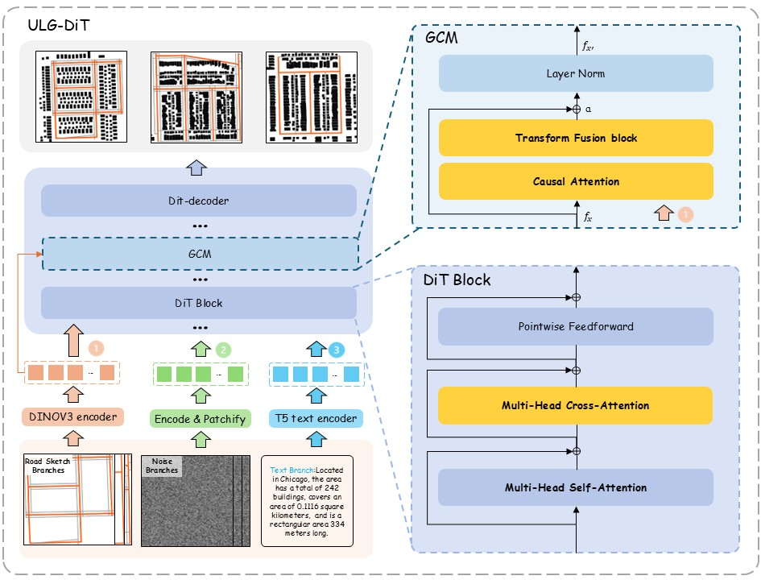

ULG-DiT: High-Fidelity Urban Layout Generation with Diffusion Transformer
Abstract
Urban layout generation plays a critical role in urban simulation, digital twin construction, and content creation.However, existing diffusion-based image generation methods, primarily designed for natural images, struggle to capture the structural consistency and multi-layered semantics required for realistic urban layouts.In this work, we propose ULG-DiT, a controllable urban layout generation framework based on a conditioned Diffusion Transformer.ULG-DiT jointly leverages textual descriptions and road network sketches through a novel cross-modal conditioning strategy.Central to our framework is the Geometric Consistency Module, which enhances cross-modal alignment and preserves road fidelity while enabling fine-grained semantic control.To support this task, we construct the first large-scale multimodal urban layout dataset, comprising one-to-one aligned road networks, building footprints, and rich textual annotations spanning 345 major cities.Extensive experiments demonstrate that ULG-DiT significantly outperforms existing baselines in both geometric coherence and controllable generation.Our work opens new avenues for fine-grained, context-aware urban layout synthesis and lays a foundation for extending layout guidance to 3D urban generation.

Fig. 1: Overview of ULG-DiT. ULG-DiT generates semantically and structurally coherent urban layouts conditioned on text and road sketches.

Fig. 2: Qualitative comparison of urban layout generation methods. Each row corresponds to an urban area, defined by a textual description and road sketch. Columns show the ground truth (GT), results from our method (ULG-DiT), and various baselines. ULG-DiT produces layouts that are more structurally coherent and faithful to the road geometry compared to existing methods.